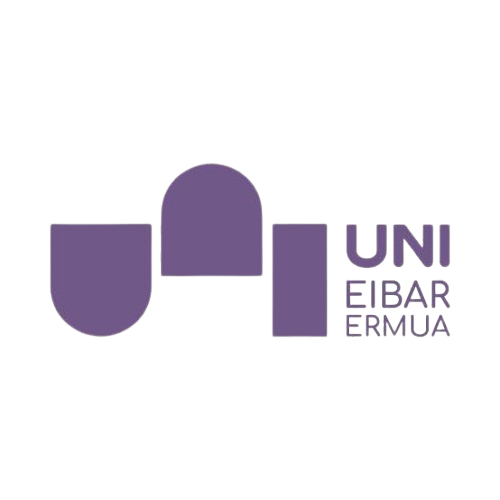

SARRERA
Erronka honetan, enpresa baten azpiegitura informatikoa landuko dugu. Windows Server eta segurtasuna konfiguratuko ditugu, sareak, ASCII, CRC-6 eta modulazioa aztertuko ditugu, eta ER diagramak eta datu-baseak sortuko ditugu. Horrez gain, HTML eta CSS erabiliz webgune bat egingo dugu. Azkenik, proiektuaren planifikazioa, jarraipena eta dokumentazioa GitHub bidez kudeatuko ditugu.
